和君商学第十八届出海班·《全球市场观察与人才战略》主题论坛
Hejun Global Elite Network 18th Cohort — Global Market Observation & Talent Strategy Forum.
出海沙龙 汇聚全球英才，共议跨境出海创新平台建设——打造"留学生本地洞察+AI数据赋能+一带一路商业孵化"三位一体的跨境创业平台。
壹 · 论坛主题 Event Theme
和君商学第十八届出海班汇聚全球英才，共议跨境出海创新平台建设。
Hejun Business School Global Elite Network 18th Cohort converges global talents to discuss cross-border innovation platform development.
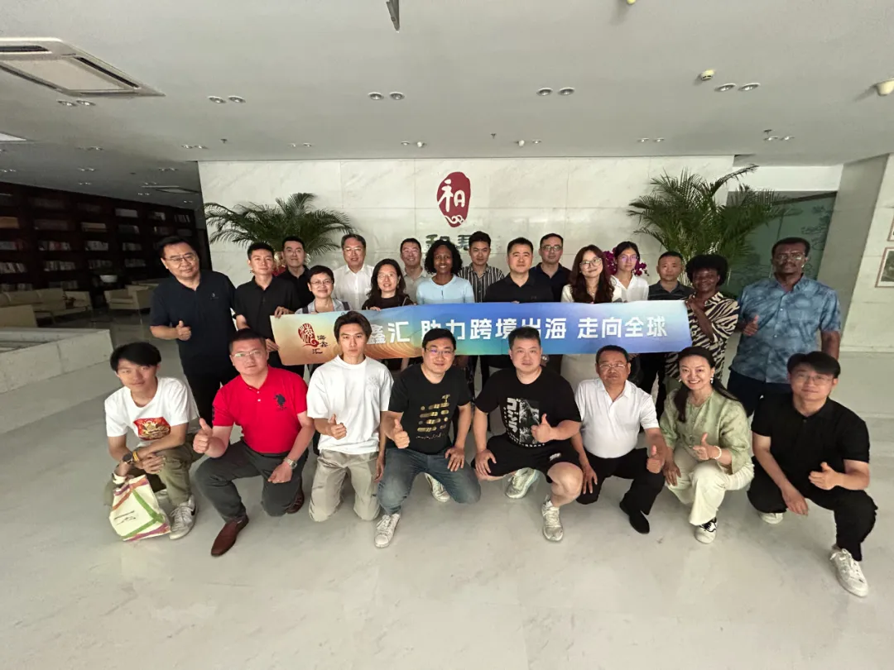
和君商学第十八届出海班近日完成录取工作，24名学员覆盖欧美国家、一带一路国家以及粤港澳大湾区。
The 18th Cohort of Hejun Global Elite Network has completed enrollment, selecting 24 professionals. The participants represent six geographic regions, including Europe & North America, Belt and Road countries, and the Guangdong-Hong Kong-Macao Greater Bay Area.
7月5日，出海班首次活动《全球市场观察与人才战略》主题论坛，在和君集团北京总部举办。特邀和君往届校友、跨境出海领域重磅嘉宾，通过"线下+线上"形式共探中国企业出海新路径。
On July 5th, the cohort's first event "Global Market Observation & Talent Strategy" forum was held at Hejun Group Beijing Headquarters. Distinguished Hejun alumni and top experts in cross-border expansion explored new pathways for Chinese enterprises going global through hybrid (online+offline) format.
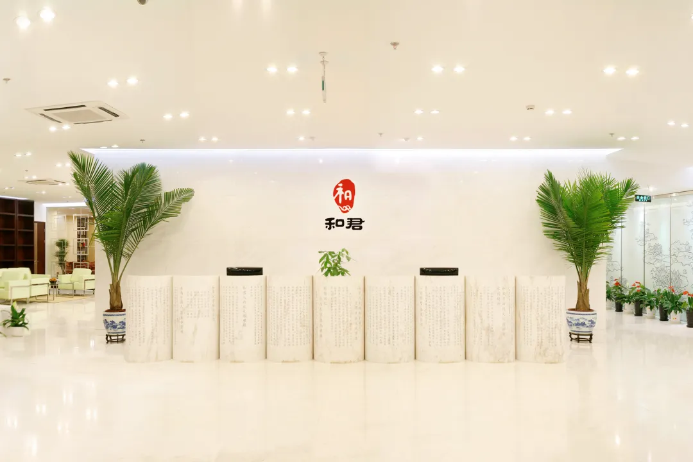
论坛提出创新定位——打造"留学生本地洞察+AI数据赋能+一带一路商业孵化"三位一体跨境创业平台，出海创业营。
The forum proposed an innovative tripartite ecosystem: International Student Insights + AI Data Empowerment + Belt & Road Business Incubation, launching the Venture Camp.
贰 · 上午议程 Morning Session（9:30 AM–12:30 PM）
致辞：李鹏飞 先生
北京和君商学在线科技股份有限公司 董事长。
Remarks by Mr. Li Pengfei — Chairman of Beijing Hejun Digital Learning Co., Ltd.
致辞：吴万良 先生
中国亚洲经济发展协会常务副会长，东盟银行独立董事，对外经济贸易大学中国金融学院客座教授，中央财经大学管理科学与工程学院客座教授。
Remarks by Mr. Wu Wanliang — Executive Vice President, China-Asia Economic Development Association; Independent Director, ASEAN Bank Limited; Adjunct Professor, School of Banking and Finance, University of International Business and Economics; Adjunct Professor, School of Management Science and Engineering, Central University of Finance and Economics.

主题一：进出口双轨企业创始人视角——验证"一带一路货盘孵化"可行性
主讲人：Han 联合创始人。企业：尽善化工（出口，化工、食品添加剂、饲料），区域布局泰国、马来西亚、印尼、印度、巴基斯坦、阿联酋（迪拜）、秘鲁、巴西、墨西哥、坦桑尼亚、尼日利亚、俄罗斯；CareBree（进口，益生菌）。方向：20年经验证明，本地化人才可降低试错成本。
Topic 1: Founder Perspectives of Dual-Import/Export Enterprises — Verifying Feasibility of "Belt & Road Cargo Pool Incubation". Speaker: Han, Co-founder. JINSchem (Export): Chemicals, Food Additives, Feed. CareBree (Import): Probiotics. 20 years of experience proves localized talents can reduce trial costs.
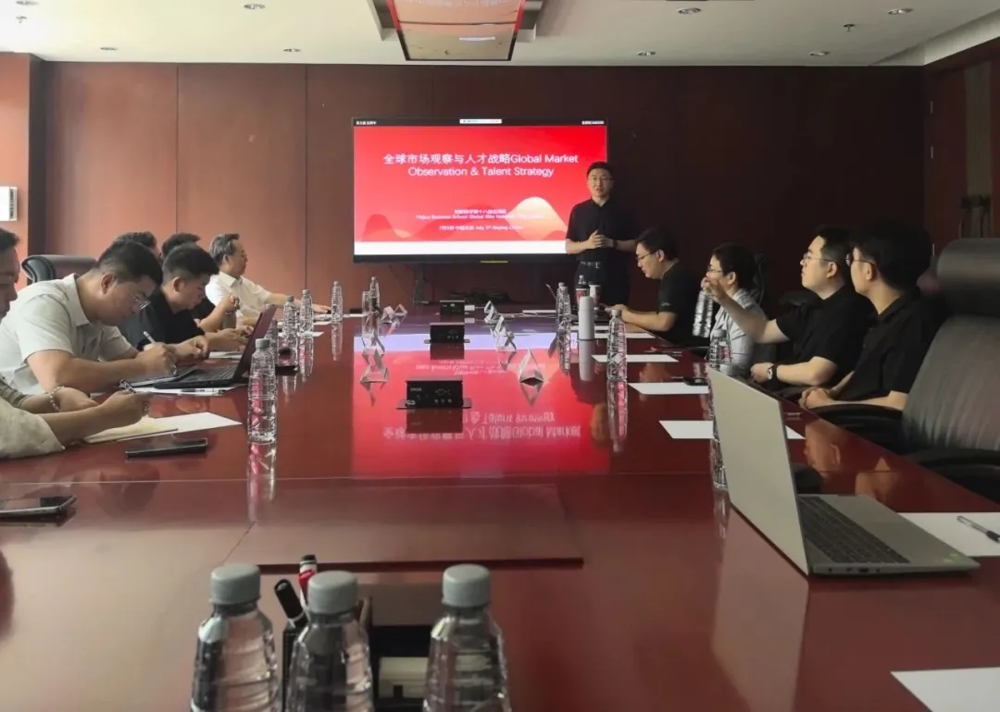
主题二：来华留学生与中华文化归国创业就业——挖掘"本地洞察"供给源
主讲人：高铮，千帆计划"对外文化贸易企业联盟主管。企业：北京华语时代文化传媒（中国外文局控股）。方向：中华文化国际传播、海外媒体合作及政府服务。
Topic 2: International Students in China & Returnee Entrepreneurship — Exploring "Local Insight" Supply Sources. Speaker: Gao Zheng, Director of "Thousand Sails" Foreign Culture Trade Enterprise Alliance. Organization: Beijing Huayu Times Culture Media (subsidiary of China International Publishing Group).
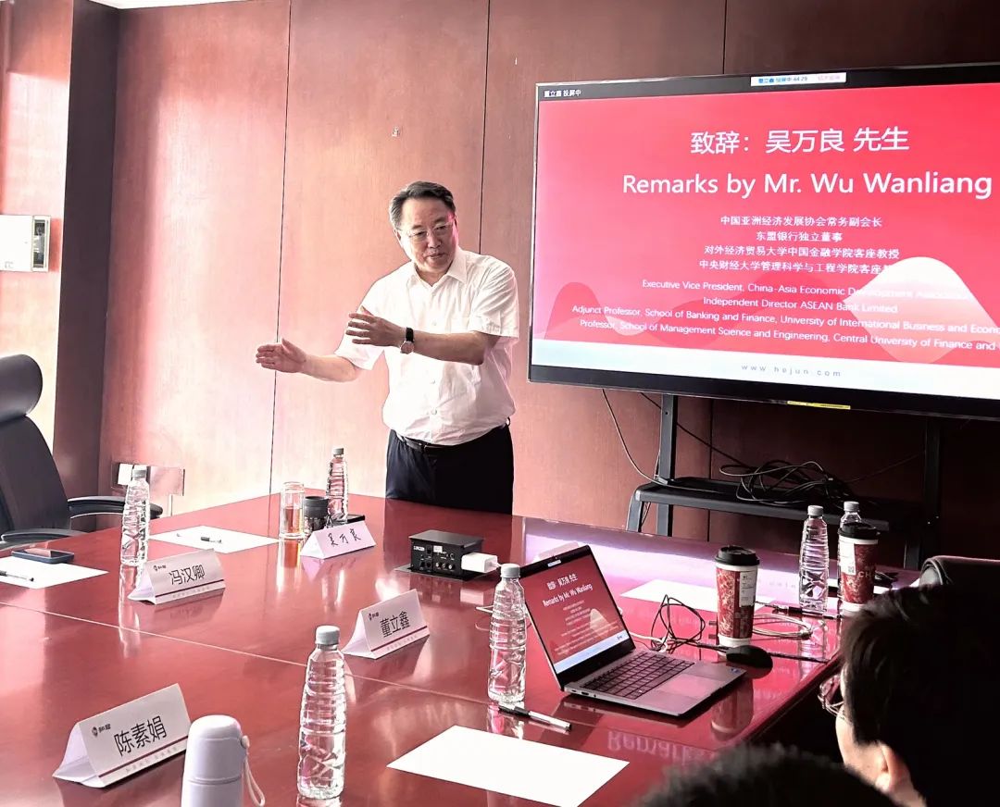
主题三：资本视角下的海外人才需求
主讲人：高新善，人力总监。企业：北京和达信立控股集团。核心赛道：新能源、生物医药，出海布局拉美、东南亚市场。业务板块：资本、产业、数字化，"AI数据赋能"资本评估模型。
Topic 3: Overseas Talent Demand from Capital Perspective. Speaker: Gao Xinshan, HR Director. Organization: Beijing Hedaxinli Holding Group. Core Sectors: New Energy, Biopharma. "AI Data Empowerment" capital evaluation model.
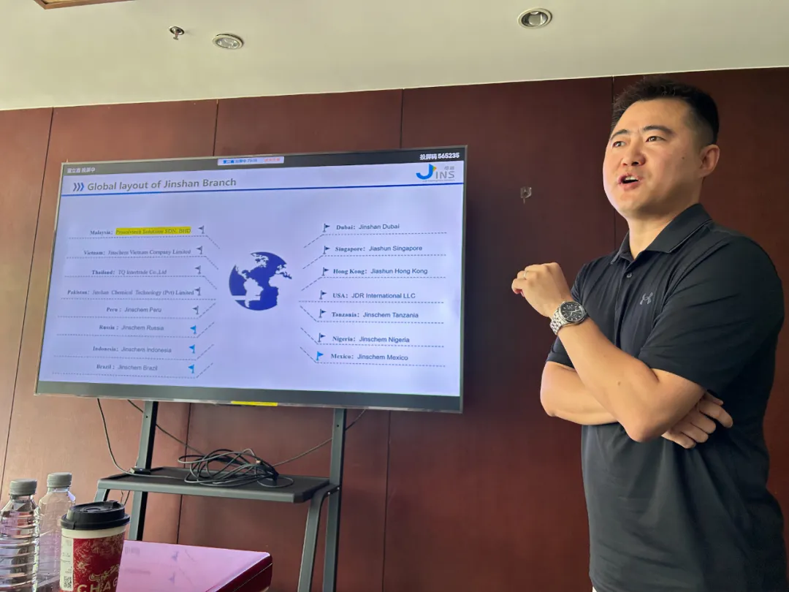
主题四：拉美市场及中国企业出海国际化人才画像
主讲人：鲁海，公共事务总监。企业：中国墨西哥商会。方向：输出"语言+政策+商业"复合型人才标准，支撑本地洞察落地。
Topic 4: Latin America Market & Talent Profiles for Chinese Enterprises Going Global. Speaker: Lu Hai, Public Affairs Director. Organization: China Mexico Chamber of Commerce.
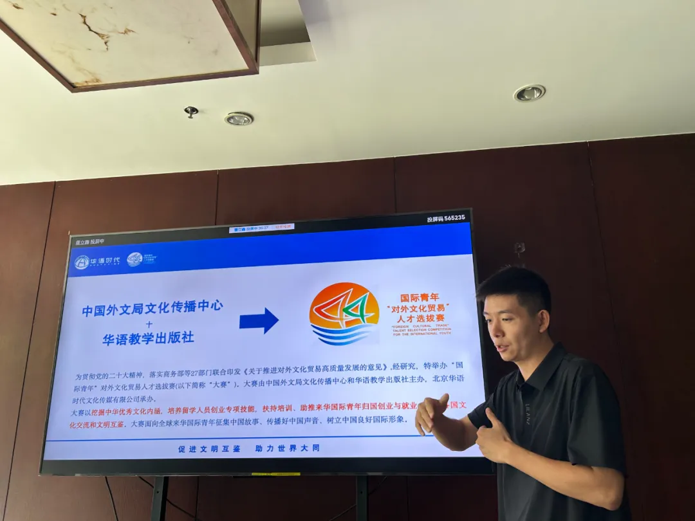
主题五：中国企业出海的就业影响
主讲人：张成刚，主任、副教授、和君商学三届。中国新就业形态研究中心主任、首都经济贸易大学劳动经济学院副教授。方向：全球化背景下的人才流动与市场重构，中国劳动力市场正从"城乡二元结构"转向包含海外市场的三元结构。
Topic 5: Employment Impact of Chinese Enterprises Going Global. Speaker: Zhang Chenggang, Director, Associate Professor, Hejun Business School Cohort 3.
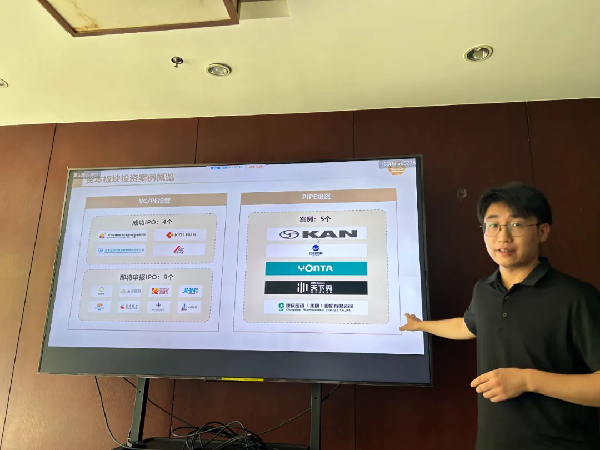
主题六：和君商学院往届校友寄语
陈素娟 Chen Sujuan（Cohort 5）、刘羽振 Liu Yuzhen（Cohort 7）……
Topic 6: Messages from Hejun Alumni.
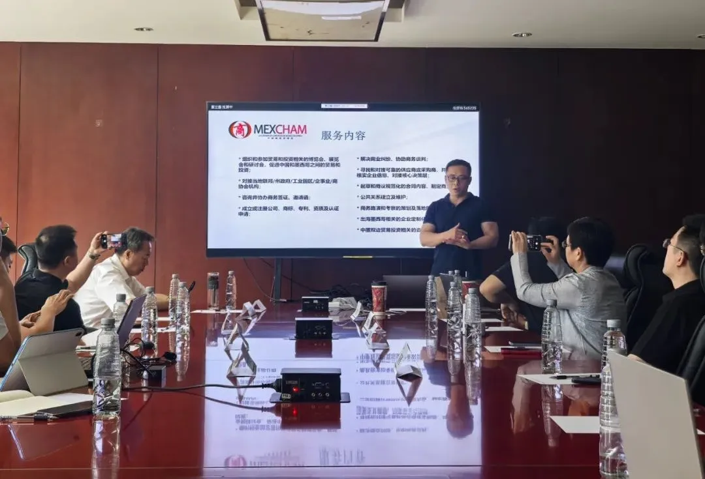
叁 · 下午议程 Afternoon Session（2:00 PM–5:00 PM）
和君商学出海班线上见面会 · Hejun Global Elite Network Online Welcome Session
主题一：哈萨克斯坦职教出海——中亚市场本地化洞察案例
主讲人：张光辉，创始人。机构：中教易尔、奇思丝路。方向：中国与中亚的国际交流合作，精品课程｜教学标准｜教材｜工坊｜产教融合｜联合科研｜联合办学类项目，企业出海哈萨克斯坦。
Topic 1: Vocational Education Expansion to Kazakhstan — Central Asia Localization Case. Speaker: Zhang Guanghui, Founder. Organization: Zhongjiao Yi'er, Qisi Silk Road.
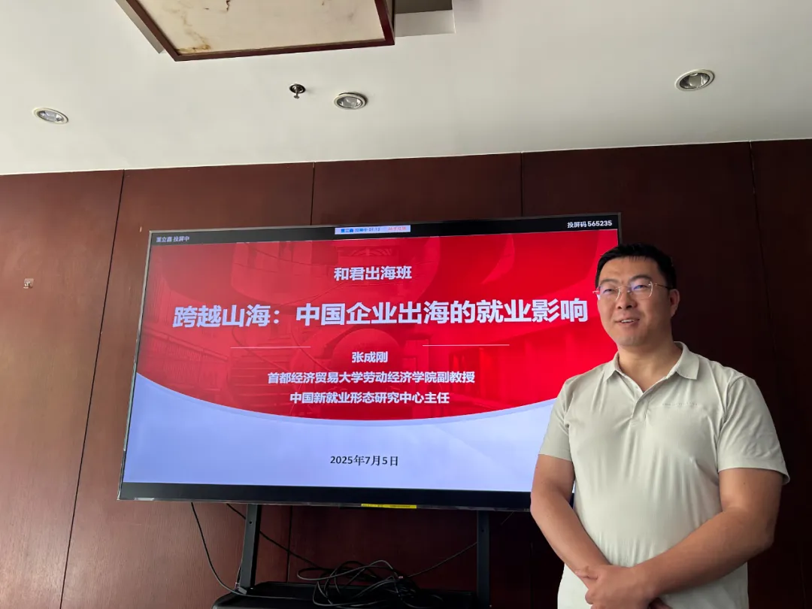
主题二：乌兹别克斯坦商贸与跨境电商——一带一路货盘孵化实战样本
主讲人：崔星，商务总监、董事会监事。机构：中矿联合控股集团，曾任中信渤海铝北方总经理。方向：商贸、金矿、跨境电商。
Topic 2: Uzbekistan Trade & Cross-border E-commerce — BRI Cargo Pool Incubation Case Study. Speaker: Cui Xing, Commercial Director, Board Supervisor. Organization: Zhongkuang United Holding Group.
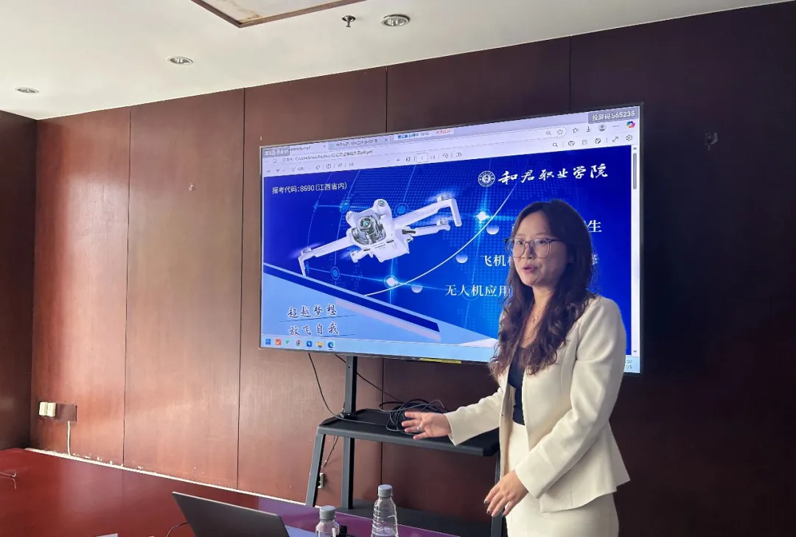
主题三：和君商学的一年学习
主讲人：陈治宇。机构：和君集团、和君商学。
Topic 3: One-Year Learning Journey at Hejun. Speaker: Chen Zhiyu. Organization: Hejun Group, Hejun Business School.
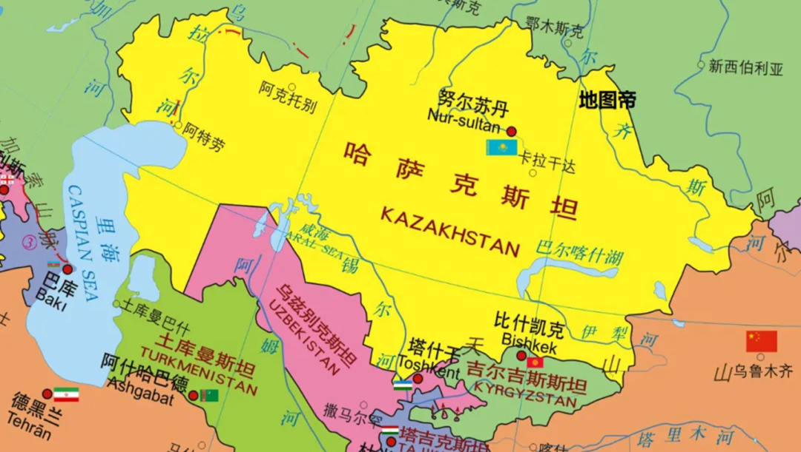
主题四：十八届同学一一交流
和君商学十八届出海班全体线上。
All members of Hejun GEN 18th Cohort online.
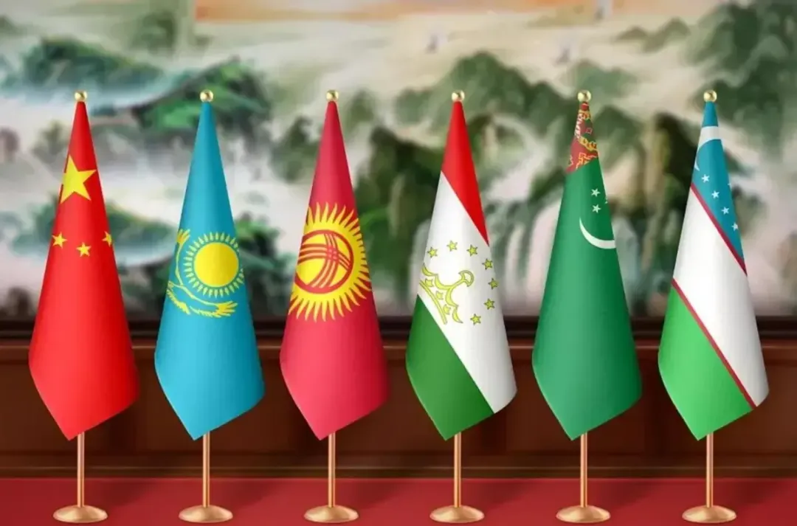
主题五：总结丨和君商学十八届出海班
主讲人：董立鑫。机构：和君集团、和君商学出海班班主任。
Topic 5: Conclusion丨GEN 18th Cohort. Speaker: Dong Lixin, Head Teacher of Hejun GEN.
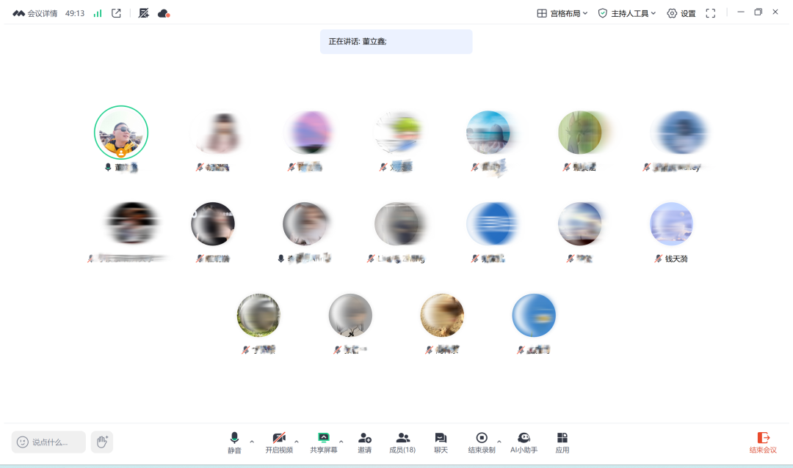
肆 · 结语 Conclusion
本次论坛以人才为枢纽，整合本地洞察、数据科技与新兴市场需求，旨在构建可持续的跨境创新生态圈，与中国出海先锋共创高精准的解决方案。论坛直击出海核心痛点，构建三位一体平台，聚焦当前出海生态关键矛盾：
The forum addressed critical pain points by integrating talent, data, and emerging markets.
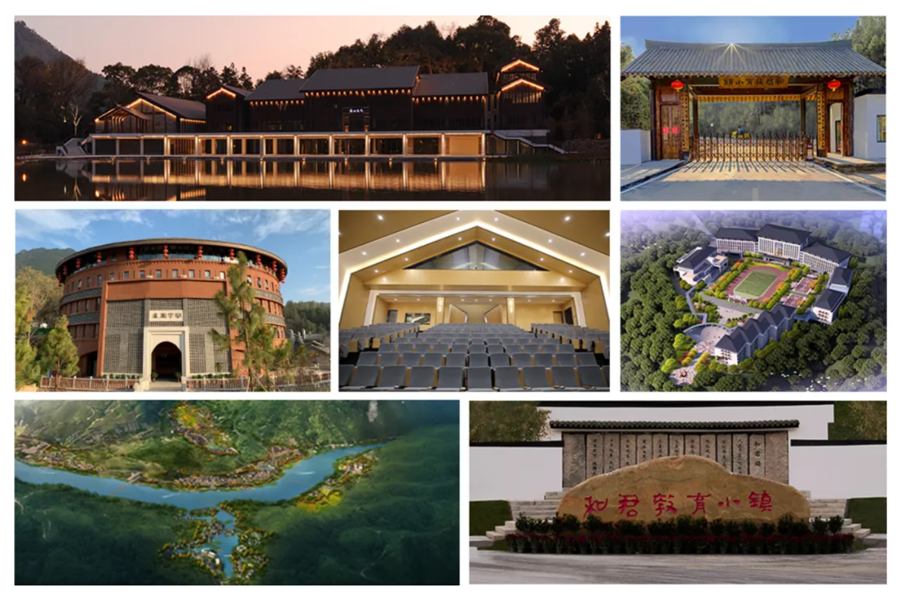
留学生：深谙本土市场需求和商品选择，但缺乏供应链与商业落地能力；出海企业：供应链企业具备优质货盘但面临选品低效、试错成本高的出海阻力。出海创业营：通过AI工具整合数据资源，链接优质供应链，赋能企业出海效率。
International Students: Deep local market insights but lack supply chain resources and commercialization expertise. Enterprises: High-quality supply chains hindered by inefficient product selection and trial costs. Venture Camp: AI tools bridge data gaps, linking supply chains to empower efficient globalization.
基于此，论坛提出创新定位——打造"留学生本地洞察+AI数据赋能+一带一路商业孵化"三位一体跨境创业平台，出海创业营。创业营形成"需求洞察-数据匹配-供应链响应"闭环。首期将赋能 25 家供应链企业、6 个一带一路区域、100+ 留学生创业者。
The forum proposed an innovative tripartite ecosystem: International Student Insights + AI Data Empowerment + Belt & Road Business Incubation, launching the Venture Camp. The Camp's first phase targets: 25 supply chain enterprises, 6 Belt & Road regions, 100+ international student entrepreneurs.
本文内容整理自和君商学出海班论坛记录。 查看公众号原文 →